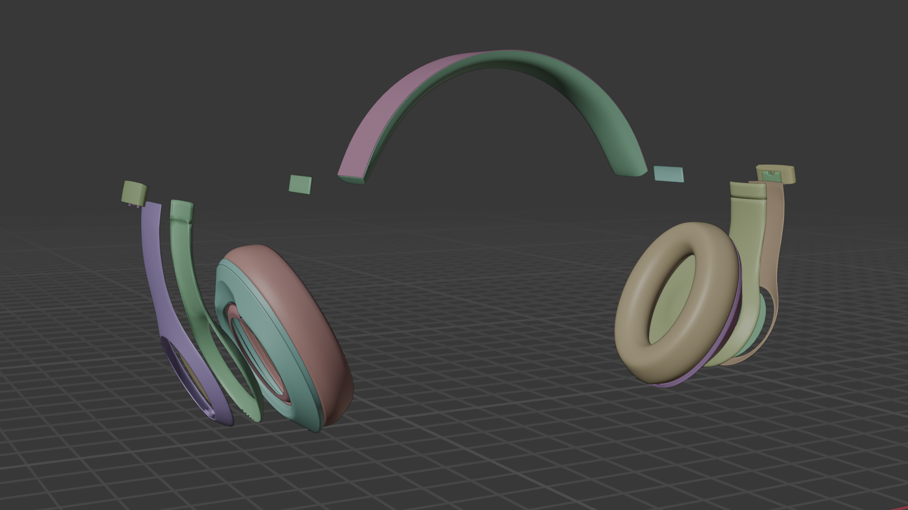
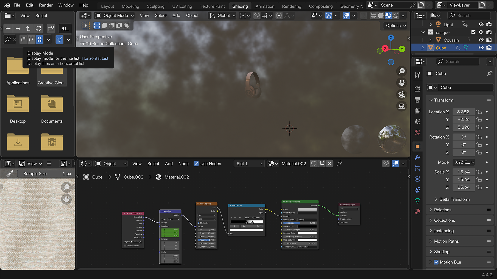
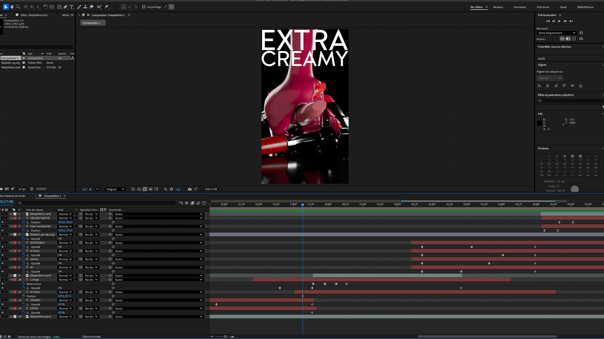

La nature du travail reposait sur la modélisation 3D et le texturing du produit, avec pour enjeu principal de rendre le Beats Studio Pro le plus fidèle et réaliste possible. L’attention portée aux détails des matériaux, aux reflets et à la cohérence des textures a été essentielle pour donner au casque une allure premium et crédible.
J’ai souhaité créer une ambiance sombre, élégante et mystérieuse, mettant en avant le caractère exclusif du produit. Cette direction artistique permettait également de souligner les qualités que je voulais transmettre : raffinement, confort et excellence audio.


Afin de toucher un public plus large, une version portrait de l’animation a également été réalisée, spécifiquement pensée pour une diffusion sur les réseaux sociaux et adaptée aux écrans de téléphone.
Enfin, le montage a été travaillé de manière rapide et dynamique, avec des jeux de lumière et des transitions percutantes qui renforcent l’impact visuel et immersif de la publicité.
